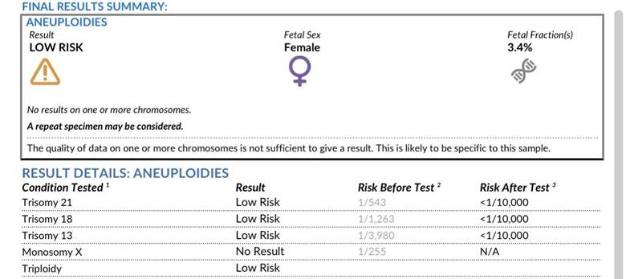
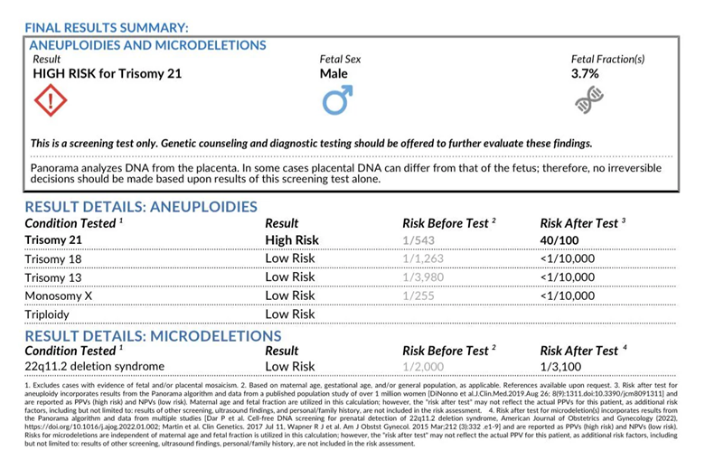

DOWN SYNDROME SCREENING
Lecture Notes
1. Introduction / Context
- Down syndrome screening is an important component of antenatal counseling.
- Screening is offered, not mandatory.
- Patient-centered: if mother declines, you accept that.
- Some women are higher risk (e.g., advanced maternal age); screening becomes a key point in their antenatal care. (say you have to do it instead of you can do it)
2. Why Screen for Down Syndrome?
- Purpose: identify pregnancies where the fetus has trisomy 21.
- If confirmed (after CVS/amniocentesis), parents may consider termination.
- Termination is not done in 3rd trimester; becomes ethically/culturally complex.
- Hence screening is usually done in the first trimester.
- Sometimes done in second trimester if woman presents late (rare in exams).
3. Types of Down Syndrome Screening Tests
Two first-trimester options (main exam focus):
A. Combined First Trimester Screening (“Combined Test”)
- Includes:
- Blood test (checks 2 markers):
- PAPP-A (Pregnancy-associated plasma protein A)
- β-hCG
- Ultrasound:
- Nuchal translucency (NT) measurement
→ explained to mother as “thickness of the skin/fold at the back of the baby’s neck.”
- Nuchal translucency (NT) measurement
- Blood test (checks 2 markers):
- Results combine blood + NT to estimate possibility of Down syndrome.
B. NIPT – Non-Invasive Prenatal Testing
- Also known previously by brand name Harmony in Australia.
- A newer, more detailed blood-based screening test.
- Discussed in depth later.
C. Second Trimester Screening (Quadruple Test)
(Rarely asked; lecturer personally has never used it)
- Measures 4 markers:
- AFP, estriol, hCG, inhibin A.
4. Timing of Tests
Lecturer simplifies to memorizing single numbers, not ranges:
Screening starts at 10 weeks
- Do NOT do Down syndrome screening before 10 weeks.
Combined Test Timing
- Blood test: at 10 weeks (can be done up to 13, but memorize “10 weeks”).
- Ultrasound (NT scan): at 12 weeks.
- Although ranges exist in textbooks, memorize 12 weeks for exam clarity.
Diagnostic Test Timing (if screening = high risk)
- CVS: 11–14 weeks (memorize “up to 14 weeks”).
- Amniocentesis: >15 weeks (after 14 weeks).
5. Interpretation of Screening Results
Screening does not give yes/no answers.
Results:
- Low risk
- Taken as a normal result.
- Does NOT mean zero chance of Down syndrome, just a very low chance.
- High risk
- Does NOT confirm Down syndrome.
- Must proceed to diagnostic testing (CVS or amniocentesis).
Why not do diagnostic testing on everyone?
- Diagnostic tests carry complications.
- Hence screening → diagnostic confirmation only if high risk.
6. Diagnostic Tests (if high risk)
- CVS (up to 14 weeks)
- Through vagina; sample chorionic villi.
- Amniocentesis (>15 weeks)
- Needle into uterus; sample amniotic fluid.
- Both are diagnostic: confirm yes/no for Down syndrome.
7. Detailed Discussion of NIPT
Why NIPT Is Popular / Advantages
- Checks trisomy 21 AND other trisomies + sex chromosome problems.
- Reported 99% accuracy, but:
- “Accuracy” ≠ sensitivity or specificity.
- Still can have false positives and false negatives.
- Simple blood test:
- Detects fetal genetic material circulating in maternal blood (“fetal fraction”).
- Can determine:
- Sex of baby early (popular for gender reveal).
- Sometimes number of fetuses.
Limitations / Problems
- Cost: ≈ $500 (much more expensive than $89 combined test).
- Not diagnostic → still a screening test.
- High risk still requires CVS or amniocentesis.
- 5% failure rate (“test failure”):
- Due to insufficient fetal fraction.
- Results in “inconclusive.”
- Mother may need to repeat test → another $500.
- More common in obese women.
- Accuracy of sex determination not 100%.
- Parents sometimes become upset if predicted sex differs at birth.
- Medicare does not cover the 12-week ultrasound even if NIPT is done.
- Patient must pay:
- ~$500 for NIPT
- ~$100 for NT ultrasound (optional but recommended)
- Patient must pay:
Clinical / Counseling Points
- NIPT is offered to all women, but combined test is cheaper.
- Even if doing NIPT, clinicians still like doing the 12-week NT ultrasound because:
- It checks for structural abnormalities, not just NT.
- Must inform patient about cost to avoid complaints or medico-legal issues.
8. NIPT Result Examples
Normal / Low Risk Result
- Shows:
- Adequate fetal fraction
- Gestational age
- Listed results for trisomy 21, 18, 13
- Result: Low probability
- Interpreted as normal; fetus female in example.
Abnormal / High Risk Result
- Shows:
- High probability for trisomy 21
- Requires:
- Genetic counseling
- CVS or amniocentesis
Clarification for exam
- Don’t stress about “1 in 2000 / 1 in 1000” numerical values.
- Look at the actual result label (“low risk” or “high risk”).
9. Final Key Takeaways from Lecturer
- NIPT = screening test, not diagnostic.
- High risk → still need CVS / amniocentesis.
- Continue to recommend 12-week ultrasound even with NIPT.
- Costs must be clearly discussed:
- NIPT ~$500.
- 12-week NT scan ~ $100.
- NIPT checks for multiple chromosomal problems and can identify sex early.
- ~5% failure/inconclusive rate; more likely in obese women.
- Sex accuracy not 100%.
- Always counsel about limitations, false positives, false negatives.
Your next patient is a 27 year old lady who is 11 weeks pregnant and has come to your general practice today to discuss about the Non Invasive Prenatal Testing (NIPT) for Down's Syndrome.
Task:
• Take history
• Counsel the patient about the NIPT - you will have 5 minutes for the first two tasks
• You will be given the results at 5 minutes
• Explain results to the mother and further management
HISTORY TAKING (only 2.5 minutes)
General Framing
- Lecturer is not focusing on detailed history taking because it is essentially an antenatal counseling history.
- There is already a structure for antenatal history.
- The lecturer asks: What are the two key questions in this specific case?
- These two questions determine pass/fail.
Key Questions (Most Important Points)
- Family history / personal history of Down syndrome
- What the patient knows about NIPT and Down syndrome
Beginning the Interaction (as demonstrated by lecturer)
- Sit down; start with an open-ended question.
- Introduce self:
“My name is Amir. I’m your GP today. So how can I help you?” - Patient says she is here for NIPT.
- Respond:
“So Mary, tell me more. What do you want to know about NIPT?” - Let her talk first.
Opening Communication Skills for Pregnancy
- Ask: “Was it a planned pregnancy?”
- Congratulate the patient.
Defining the Key Questions (as lecturer emphasizes)
1. Patient’s understanding of the test and condition
- Most important question:
“Can you tell me what you know about NIPT test and Down syndrome?”
or
“Tell me, what do you already know?” - Includes the typical counseling case question:
“Do you have any concerns or specific questions you want to ask me before I go through it?”
(Used to reveal hidden agendas.) - Example patient response given by lecturer:
“Yeah doctor, I’ve heard my friend told me that this test does this or that.” - Lecturer restates how to ask:
“Just before we start talking, Mary, I just want to know how much do you know about Down syndrome and tell me what you know about NIPT.” - Follow-up:
“Is there anything you want to know about it specifically or do you have any concerns about it?”
2. Family history of Down syndrome
- Ask:
“Do you have any Down syndrome history in the family?” - Includes:
- The patient herself
- Her family
- Her children
- Her family’s children (e.g., sister’s children)
Additional Antenatal History Components (Lecturer’s 5 Ps and Related Questions)
- Period
- “When was your last period?”
- “Are your periods regular or irregular?”
- Pregnancy symptoms
- “Tell me about the pregnancy symptoms.”
- Partner
- “Tell me about your partner.”
- Assess if relationship is stable and supportive.
- Past obstetric history
- “Is this the first pregnancy?”
- If not:
- Ask about previous pregnancies
- Outcomes
- Particularly if she has had a Down syndrome baby before
- Also: high blood sugar, high blood pressure, delivery problems
- Pap smear
- “When was your last pap smear?”
- Medical conditions
- “Do you have any medical conditions?”
- Medications
- “Are you using any medications, specifically thyroid problems, diabetes, heart problems?”
- Family history
- “Tell me any family history problems, family history or genetic problems or medical conditions.”
- Lifestyle
- “Tell me a little bit more about your lifestyle.”
- Psychosocial assessment
- “How are you feeling about all of this? How are you coping with your pregnancy?”
Contextual Emphasis
- You have boxes and a structure, but in this case you are focusing on the specific reason for the visit.
- If the two key questions are not asked:
Lecturer example criticism:
“You just asked about alcohol, coffee, and no.”
Timing and Performance Expectations
- History should be completed in around 2–2.5 minutes.
- Candidate must manage their own time allocation.
- Two tasks must be balanced within the 5 minutes.
- If a person spends the whole time on history: inappropriate.
- You don’t have a timer but should feel when it’s taking too long.
- Should be faster than the big history done in the previous case.
PATIENT COUNSELLING
1. Starting the Counselling
Offer Down Syndrome screening
- Begin with the key statement:
“We usually offer Down syndrome screening to all pregnant ladies, irrespective of age.”
2. Brief Explanation of Down Syndrome (Layman terms)
- Keep it simple; don’t talk for too long.
- Key points to explain:
- Down syndrome is a genetic disorder.
- Genes are packaged into chromosomes ("packages").
- Humans have 23 pairs of chromosomes.
- In Down syndrome:
- There is one extra chromosome in the 21st pair.
- This means three copies → called a trisomy.
- Use the term “trisomy” as it helps later when discussing other trisomies.
Example phrasing from lecturer’s model:
“In Down syndrome, you have one extra chromosome in the 21st pair, meaning you have three chromosomes there. Because it’s three, we call it a trisomy.”
3. Explain the Two Screening Options
Option 1: Combined Testing
- A blood test + ultrasound.
- Used to calculate the probability of Down syndrome.
Option 2: NIPT (Non-Invasive Prenatal Testing)
- State the full name once:
“Non-invasive prenatal testing”
(after that, you can say NIPT).
5. Clarify That Both Are Screening Tests
- Very important explanation:
- Both are screening tests.
- They are good at ruling out Down syndrome with high probability.
- If negative/low risk → low possibility of the condition.
- Must emphasize they are not 100% accurate.
Suggested phrasing based on lecturer:
“These tests help rule out the possibility with good probability, but they’re not always 100% accurate.”
6. Explain the Next Step if Screening Is High Risk
- If the test suggests high risk, you must confirm with diagnostic testing.
- Two options for diagnostic testing:
a) Chorionic Villus Sampling (CVS)
- For pregnancies <14 weeks.
- Explain simply:
- “A small sample of the placenta is taken and analyzed.”
b) Amniocentesis
- For pregnancies >15 weeks.
- Explain simply:
- “A sample of the fluid around the baby is taken and analyzed.”
Purpose of counselling:
- These tests have a small risk of complications.
- Your role is to explain the good (accuracy) and the bad (risk to fetus).
- Mother decides whether to accept the risk.
7. Explain Why You’re Counselling Before Showing Results
- You're helping the mother understand:
- What screening means
- What a normal/low-risk result implies
- What will happen if the result shows high risk
This prepares her before the results appear.
8. Discuss the Good Things (Pros) of NIPT
Pro #1 — “it Tests for other genetic disorders
- Checks for:
- Trisomy 21
- Trisomy 13
- Trisomy 18
- Some sex chromosome problems
Pro #2 — More accurate than combined testing
- Which is good becoz it Reduced need for invasive tests like CVS or amniocentesis.
Pro #3 — Tells the sex of the baby early
- Can determine baby boy or baby girl very early in pregnancy.
9. Discuss the Bad Things (Cons) of NIPT
Con #1 — Expensive
- Around $500 or more.
- Price varies across cities and labs.
Con #2 —rarely Test may fail to produce a result
- Rare (~5%).
- Fails to gather enough fetal sample → inconclusive.
Con #3 — Difficulty in twin pregnancies
- Hard to interpret results in multiple pregnancies ("hard to know whose is whose").
10. What the NIPT Involves
- Simply a blood sample from the mother.
- Used to detect the baby’s genetic material and analyze for abnormalities.
EXPLAINING THE NIPT RESULTS AND FURTHER MANAGEMENT
1. Pre-Result Framework (Before Seeing the Result)
Key requirement emphasized in the lecture:
Before reading the result aloud, you must explain:
How results are reported
- “Usually the results are reported as low risk and high risk results.”
What low-risk means
- It is reassuring.
- “We don’t need to do any further testing or take any further action.”
- Emphasize again:
- “This does not mean we have ruled it out 100%.”
- “But we have ruled out the possibility of Down syndrome with a high probability.”
- Avoid saying “normal result” in the exam, but you may reassure the patient by explaining it is “low risk.”
What high-risk means
- “If it is reported as high risk, we need to proceed to the accurate diagnostic testing that I’ve already told you about.”
Purpose of pre-result explanation (as stressed in the lecture)
- This is the key part of the case.
- Must cover:
- It is a screening test.
- How results come (low/high risk).
- What a positive/high-risk result means and what happens next.
- Do this before reading the result to avoid panicking and to maintain structured counselling.
2. Reading a Low-Risk Result (Most common exam scenario)

Use a calm, structured approach as in the video:
Read the technical parts first
- “I can see that you have one fetus — this confirms no twins or multiple pregnancies.”
Link back to prior explanations
- “I’ve already told you what trisomy 21 is. This is the Down syndrome we’re talking about.”
Deliver the result
- “The result is low risk. That’s really good.”
- “We don’t need to do anything extra, and we have ruled it out with a high probability.”
Mention other conditions
- “We’ve also checked trisomy 18, trisomy 13, and sex chromosome problems — all low risk.”
- “That is a good result. We’re going to take it as normal. We don’t need to do anything extra.”
Optional gender disclosure
- Ask first:
- “Would you like to know the sex of your baby?”
- Warn not to get excited or reveal without permission (joke example in transcript).
- Offer to place it in an envelope if they prefer.
3. Reading a High-Risk Result (Breaking Bad News Mode)

Start by stating the normal findings first
- “Your trisomy 18, trisomy 13 and sex chromosomes are low probability — that’s good.”
Then transition gently to the abnormal finding
- “But talking about trisomy 21 — your Down syndrome — I need to break bad news today.”
- “Unfortunately, I don’t have good news.”
Activate breaking-bad-news approach
- Ask: “Do you want anyone to be with you?”
- Deliver sensitively:
- “The Down syndrome result has come back as high probability.”
Key messages to repeat (as emphasized in the video)
- “It is not confirmed yet.”
- “We need to arrange for further, more accurate diagnostic testing.”
- If distress occurs:
- Offer tissue, empathy, water, silence; reassure: “I’m here to help you, here to support you.”
Discuss false positives
- “Occasionally we have false positive results in NIPT.
The result might be positive here, but the next diagnostic test may come back normal.”
4. Further Advice (After discussing results)
General pregnancy advice
- Vaccinations
- Supplementation
- Lifestyle and things to avoid
Next pregnancy steps
- 20-week morphology scan
- Additional routine checks
- Option to still do the 12-week nuchal translucency scan
Timing note from transcript
- The patient is at “11 weeks” in the example scenario.
5. Essential OSCE Take-Home Points (Lecture Emphasis)
You will not pass if you fail to clearly explain:
- How results are reported (low/high risk).
- What a positive/high-risk result means.
- What happens next after a high-risk result.
- That this is a screening test, not diagnostic.
These must be completed before the result appears on screen.